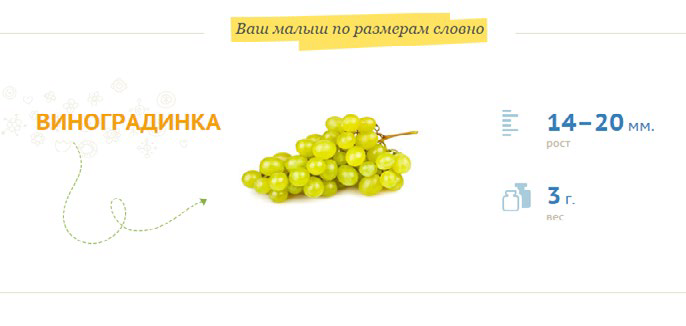
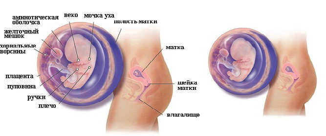

8 неделя беременности

Появилась верхняя губа, веки и кончик носа. Крошечный язык растет внутри ротика малыша.
Это мальчик – нет, постойте… девочка.
Во время этой недели половые органы вашего малыша станут либо яичками, либо яичниками. Несмотря на то, что пол вашего ребенка был определен еще в момент зачатия, половым органам потребовалось все предыдущее время для их формирования. Если вы желаете узнать пол ребенка до рождения, сейчас еще слишком рано, чтобы он показался на УЗИ.
Хотя вы еще не можете определить пол ребенка, некоторые черты становятся сейчас хорошо различимы. На лице вашего малыша появилась верхняя губа, веки и кончик носа. Крошечный язык растет сейчас внутри его ротика. Пальчики на руках и ногах, которые вы будете перебирать после рождения, начали также формироваться.
У малыша на этой неделе новый «статус». Теперь он называется не зародышем, а плодом. Развивается плацента, улучшается маточно-плацентарное кровообращение. С этой неделе плод будет получать питание через пуповину. Несмотря на крохотные размеры плода (всего 1.5–2 см), он уже выглядит как человек.
На 8 неделе завершается формирование сердца и крупных кровеносных сосудов. Совершенствуются внутренние органы.
Сердце становится четырехкамерным, в легких появляются разветвления бронхов, появляются почки. Желудок начинает вырабатывать желудочный сок, а длина кишечника значительно увеличивается.
Мозг плода продолжает активно развиваться, мозжечок начинает работать и появляются небольшие движения в конечностях (больше двигает ручками).
На этой неделе все органы сформированы, на всех последующих ничего нового уже не появится. Просто все будет совершенствоваться, а сам плод – расти и набирать вес.
ВАШ ОРГАНИЗМ на 8 неделе беременности постепенно начнет приходить в «колею». Наступит небольшое облегчение, организм привыкнет к гормональным перестройкам.
Правда неприятные спутники, такие как тошнота, изжога, слабость, вздутие живот, изменение вкуса, болезненность молочных желез, головокружение и т.д. – все еще остаются с вами. Однако не считайте беременность болезнью! Это не так.
Беременность – это новый этап жизни. Кроме того, во время беременности под влиянием вырабатываемых гормонов женщина словно омолаживается. В медицине не редки случаи, когда женщины, страдающие неизлечимыми заболеваниями, буквально излечивались или наступала стойкая ремиссия.
Однако, все это индивидуально. Но в период беременности у женщин очищается кожа, волосы становятся крепче и гуще, голос становится мелодичнее – всему этому способствуют гормоны беременности.
Животик начнет незначительно увеличиваться (у худощавых женщин это будет более заметно). Настало время начать думать о смене привычной одежды. Ваша матка уже размером с апельсин, так что внутри вас становится тесновато. Вы можете начать замечать такой симптом, как ишиалгия, т.е. ощущение боли или покалывания в ногах. Вам следует сообщить об этом вашему врачу и узнать у него, как наилучшим образом облегчить дискомфорт.
Если у вас нет токсикоза, то вы входите в число счастливых женщин, которые могут питаться привычным для себя образом.
Не думайте, что отсутствие токсикоза – это отклонение от нормы.
Каждая женщина по-разному переносит беременность, не следует смотреть на других, прислушивайтесь исключительно к своему врачу.
Изменяется образ жизни, вам часто хочется спать, может возникнуть ощущение развитости и постоянной усталости.
Вы можете ссориться с близкими и плакать по пустякам. Это нормальное проявление вашего нового положения на первых сроках. Потерпите, скоро вы почувствуете себя лучше, и все недуги пройдут.
На этом сроке нередко возникает молочница. Это связано с тем, что для защиты плода от инфекций среда влагалища становится очень кислой, что нравится грибкам кандида и может вызвать их размножение. Белые крошкообразные выделения и зуд являются ее основными проявлениями. Если же выделения белые или желтые, не вызывают зуд и их не так уж много, то – это является нормой.
Внутриутробное развитие плода на 8 неделе беременности
ЗДОРОВЫЕ СОВЕТЫ
Многих женщин волнует вопрос о сексуальной жизни во время беременности. врачи считают: сексуальные отношения возможны, если беременность протекает без осложнений.
Рекомендуется также женщинам прислушиваться к себе – если хочется, то пожалуйста, если не хочется – это тоже варианты нормы.
Визиты к врачу должны стать регулярными. Перед посещением врача запишите все имеющиеся у вас вопросы. Ни один вопрос не считайте наивным и не бойтесь показаться настырной.
Ваше здоровье и здоровье малыша превыше всего, поэтому постоянно задавайте вопросы.
Второй месяц – это срок, когда важно быть предельно внимательной к своему здоровью, и обращать внимание на любые изменения в организме. Сейчас высок риск развития пороков плода. Отнеситесь осторожно к лекарствам, если у вас простуда, температура – не назначайте себе лечение сами, обратитесь к врачу.
Полезные советы на 8 неделе беременности
- Если кожа стала жирной и появились угри, не стоит скупать всевозможные средства «от прыщей». Далеко не любое из них можно использовать беременным. Для улучшения состояния кожи очищайте ее 2-3 раза в день дезинфицирующим лосьоном или тоником, не пользуйтесь жирными кремами, декоративную косметику применяйте по минимуму.
- Если появились боли в нижних отделах живота или кровянистые выделения из половых путей, как можно скорее обратитесь к врачу! Это может быть угроза прерывания беременности или начало выкидыша. В случае сочетания болей в животе с кровянистыми выделениями вызывайте скорую помощь.
- Если к концу 8 недели вы поправились более чем на 0,5-1 кг, обратитесь к врачу. Излишний вес может осложнить дальнейшее течение беременности.